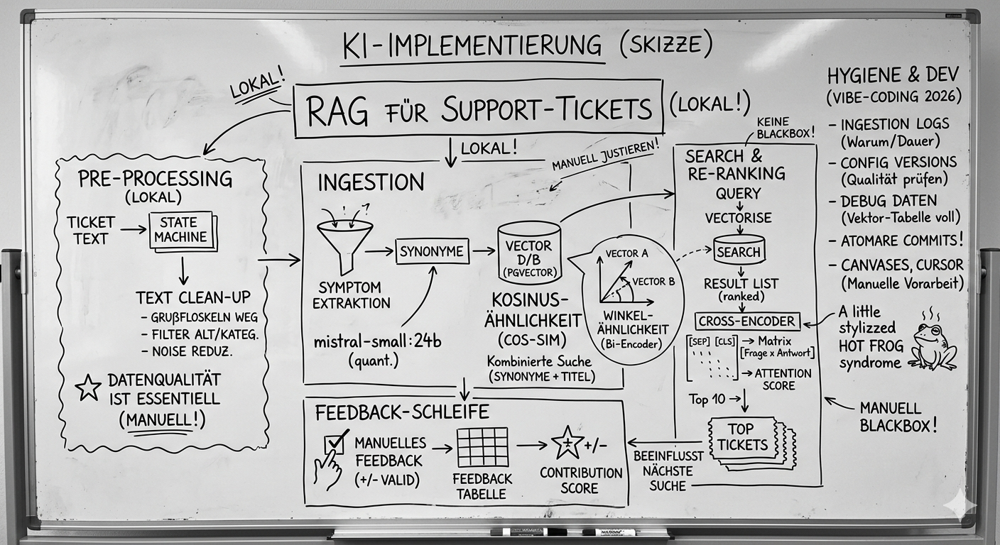

Table of Contents
Ist das RAG oder kann das weg? Oder: Suchst du noch oder RAGst du schon?
Reden ja immer alle von KI und wie das die Arbeitswelt verändern wird, aber bis auf Hyphens und Raketen-Emoticons auf LinkedIn sind das meist nur charmante Sprüche. Also ran an die Buletten und mal wieder was gebaut:
An mich wurde vor einiger Zeit ein Wunsch herangetragen, den ganzen neumodischen Kram auch mal produktivitätssteigernd einzusetzen. Genau genommen ging es um Support-Tickets, die besser durchsuchbar sein sollen. Und noch genauer genommen ging es um Tickets, in denen ein technisches Problem beschrieben wird und der Support eine Antwort liefert. Die Herausforderung: Es handelt sich um eine Branche mit sehr speziellen Symptom-Beschreibungen zu sehr spezifischen Produkten.
Das klingt einfacher gesagt, als getan. Und hier ist das Problem: Klar kann ich mit Claude Code schnell mal einen Tetris Klon aufziehen, aber man stülpt KI eben nicht einfach über vorhandene Geschäfts-Prozesse. Während ich die KI ohne weiteres um Lösungen bitten könnte, die IT-Themen betreffen, würde sie hier gnadenlos versagen. KI ist auf StackOverflow trainiert, nicht auf die Support-Themen irgendwelcher mittleren Unternehmen.
Hinzu kommen ganz andere banale Problemen an: Wenn es um Tickets geht, ist eine KI aus der Cloud ausgeschlossen, da hier personenbezogene Daten verarbeitet werden. Man braucht also lokale Hardware. Und die ist gerade sehr teuer. (Weil alle gerade KI in der Cloud nutzen wollen… hm, seltsam). Die Realität ist, dass der “Tante Emma Laden um die Ecke” keinen Keller voll mit H100 hat. Und dann lass ich auch nicht einfach Gemini auf das Konzept los und erhalte nach 2 Stunden eine Oberfläche, die alle architektonischen Besonderheiten berücksichtigt und mir ein ausgefeiltes Datenmodell zur Verfügung stellt. Es gibt “semantische Feinheiten”, die lassen sich nur manuell justieren. In diesem Fall müssen die Tickets sorgfältig vorverarbeitet werden, um Noise zu entfernen. Hype und Realität liegen sehr, sehr weit auseinander… aber genug der warmen Worte: Ich beschreibe hier einmal das Vorgehen in groben Zügen. Ins Detail gehen darf ich nicht. Aus Gründen. Viel Spaß!

Pre-Processing - es geht nicht ohne.
Nicht nur für die Qualität auch für die Leistung ist die Vorverarbeitung essentiell. Punkt. Dazu müssen die Tickets bereinigt werden. Das fängt damit an, dass z.B. Grußfloskeln und Abschiedszeilen entfernt werden. Dazu habe ich eine kleine “State-Machine” geschrieben (schreiben lassen, hehe), die die Ticket-Texte Zeile für Zeile durchgeht. Je nachdem, wie die Zeile anfängt bzw. welche Schlagwörter enthalten sind, wechselt der Status und der Status bestimmt, ob eine Zeile weiter verwendet wird.
Beginnt eine Zeile mit “Hallo”, kann ich sie ignorieren. Beginnt eine Zeile mit “mit freundlichen Grüßen”, weiß ich, dass ich den Rest des Tickets ignorieren kann. Und so weiter. Dazu gibt es noch ein paar einfache Filter-Regeln, um alte Tickets zu ignorieren oder Tickets, die anhand der (sehr gut gepflegten Kategorien) keine Probleme beschreiben.
Viel mehr gibt es dazu gar nicht zu sagen, nur soviel: Die Datenqualität ist extrem wichtig, sie erfordert ein Verständnis des vorliegenden Datenmodells und das ist, jedenfalls im Moment, durch KI noch nicht lösbar.
Ingestion
Nach der Verarbeitung der Rohdaten kommt der eigentliche Spaß - jetzt geht um architektonische Entscheidungen. Sicherlich gäbe es andere Möglichkeiten, die Informationen weiter zu verarbeiten. Man könnte ein vorhandenes LLM feintunen oder sogar komplett neu trainieren. Ich hielt das hier für zu aufwendig und finde den Weg über RAG und eine Vektordatenbank weitaus sinnvoller. Aber verwandeln wir einfach alle Tickets in Vektoren und ballern die in eine Datenbank?
Nope. (⌐■_■)
Hier muss weiter gefeilt werden:
Zunächst schicken wir jedes Ticket an ein lokales LLM (Ollama ftw) und lassen uns zwei Dinge extrahieren: Symptome und deren Synonyme (symptom extraction and semantic expansion) Warum ist das wichtig? Wie schon oben erwähnt, sind die Problembeschreibungen von einem sehr besonderen Vokabular geprägt. Gleichzeitig macht es kaum Sinn, den kompletten Tickettext - wenn auch schon bereinigt - zu übernehmen, da das zu viel Noise erzeugt. Als Modell habe ich hier mistral-small:24b-instruct-2501-q4_K_M verwendet.
Zur Erklärung: Die 24b geben den Umfang des Modells an: 24 Milliarden Parameter (das B steht für Billions im Englischen). Die Faustregel lautet, wie so oft, je größer, desto besser. Ein Modell bzw. die Parameter sind im Prinzip nur eine Menge von Zahlen, genauer gesagt Floats. Diese haben eine Genauigkeit von 32 bit. Für 24 Billionen dieser Floats werden also
24 * 4 = 96 GBSpeicher benötigt. Das ist sehr viel. Man kann aber die Genauigkeit reduzieren, sprich “quantifizieren”. Dafür steht hier das q4, also 4 Bit. Der Speicherbedarf sinkt dabei auf ca.12 GB. Das sind nur “Überschlagsrechnungen”, aber im Prinzip ist es das, was bei der Modellentscheidung berücksichtigt wird, wenn die Hardware der einschränkende Faktor ist.
Danach werden zwei Attribute “vektorisiert”: Die Synonyme und der Titel (ein manuell gesetztes, kurzes und damit qualitiativ sehr wichtiges Schlagwort). Die Symptome habe ich nur zur Erzeugung der Synonyme verwendet, diese müssen nicht weiter verarbeitet werden.
Man nennt das ganze “embedden”. Einfach gesagt wird jedes Wort durch einen Vektor aus Zahlen ersetzt - da sind sie wieder, die Floats! Diese Vektoren sind immer gleich groß, egal wie lang der Text ist.
“Hello world.” ergibt mit dem Paraphrase-MiniLM-L3v-v2 z.B. diesn Vektor:
1[-0.02387238828205746,0.031304207180667405,0.05010987525414924,0.009739787412972717,0.007596318645688104,0.011358127811961407,0.05233465445881466,-0.04094259840171881,-0.08519433327669537,0.06741062405927463,-0.05629769502350367,-0.08552042419307328,-0.027117592145863668,0.018514577213607192,0.02138661702784072,0.08505345304569854,0.03534424499595665,-0.02039192971870989,-0.07467982484499935,-0.023542512391995146,0.013782835690474417,0.08584731595194102,-0.014569365764061261,0.026587029658684206,-0.03936189839612113,-0.004133350198336408,0.04320840736431838,0.07291740814793016,0.05109245958038099,-0.07236704310867664,0.04510166299090866,-0.08221843538814465,0.09563565638942244,-0.021623402925209603,-0.013718578518186624,0.036857817511100996,-0.01641381866201767,-0.011418979031503676,-0.007002203451085373,0.01787821432441306,0.05700190803201256,0.014663259259456746,0.042964721757510774,-0.05282869396034847,0.0218669352563494,-0.04162956171303024,0.0350942051079379,0.049304946339457104,-0.06521378203069422,-0.04777724209917876,0.005049966141110513,-0.054911207590373524,-0.06261055825517689,0.026610189263041994,0.08624550383854876,0.09273989425969606,-0.012644277732918185,-0.11781329420020094,-0.050032919753631416,0.05737917262082758,0.013147288825618256,0.04321210468655136,-0.10654501690325223,0.038258645555329394,0.04870006274129409,-0.0020523437733967224,-0.053480069799630284,0.07050278128769207,-0.10607153355633515,-0.02745774890899879,-0.011854736366861568,-0.07639352976897136,-0.02125870148517759,0.008442483154353789,0.021798120344140044,0.050767848351988686,-0.005701350926838555,-0.06242409425401028,-0.007944459230994336,-0.007884370763769306,0.07573314214729135,0.018460401737355397,-0.045410431418549335,0.006516482585695228,0.06724287737914389,0.024597040175572543,-0.05403934129721045,0.054917568513643246,0.058778795470306996,0.006332953764429327,-0.04772323796092749,-0.021439852923910013,0.10642830536119424,-0.0018025388143116502,0.015056587056925993,-0.028003811385376616,0.09295024608561078,-0.05091595948037502,-0.043795700080357235,0.19435213540209745,0.021498619079271766,-0.004907848521713486,0.028709279607402056,0.00900851491203086,0.08828888137509174,0.013520897418682036,-0.029857111776445896,0.09404836271740083,-0.04588813287931177,0.01754369517792516,-0.021003313994476913,-0.039032957223305575,-0.0715565192085091,-0.044025290832233485,-0.015913441619971335,-0.0037432999178883953,-0.09894563653967015,-0.007947096806005676,-0.008376117128471642,-0.042496284070715346,-0.033374617353360635,-0.020733674374386727,0.03419989258783973,-0.04416099567963832,0.026441443325865822,-0.07194358191812507,0.07215138631125181,0.00013186492424103707,0.01651178482373116,0.06600182391814176,0.03582873436946798,0.08916985894597926,0.01808284649070205,-0.04807543623403191,-0.06838142815243269,0.032614922551898115,-0.016031311659040034,0.0007813653986198832,0.003902664455662462,-0.005937543071615014,0.027326753281116462,-0.009385310557955981,-0.020406212449012074,0.04621046615272076,-0.005159901089029616,0.012942812442713055,-0.005802576780456927,0.0009701831284583501,-0.0013738596598283487,-0.05158786416050211,-0.03117139637306584,0.13421729522189862,0.09020963105757421,-0.05679930111748895,0.08297631622985786,0.024485817956037898,0.11139894451577483,-0.019392536578861943,0.011845545655538773,0.09058997186837028,-0.003199535458221807,0.03734236246102072,0.022918060679314987,-0.003931506307234461,0.0007674177533946859,-0.0034512472472678925,0.059419605014382,-0.024932167544851887,0.01847251481889453,0.000579072694132051,-0.10540838446491874,0.04102269254601297,-0.005848003987817679,0.03355380779207788,-0.012528532813709714,-0.044404421975057465,0.024572386751910678,0.026256665323156965,-0.12723572932453545,0.07772025304355233,-0.09243295876911488,-0.07083935255917208,0.009892511772968883,-0.010776647168271258,0.004348713389662225,-0.02049924654336059,-0.04266045461229387,-0.02485581342173862,0.04903333006307083,-0.019904631559266896,0.046349434419716416,-0.05176422708166589,0.03361966268444302,0.056778859030061656,0.026209906586382274,-0.008869654815703265,-0.01169453845406593,0.012622244194703527,0.026797119326613928,-0.03660282047855738,0.03255662208617309,0.11695431783832465,0.06938860930927629,0.020318352789390044,0.16244531214072974,0.019829265289868912,-0.007717919827267578,0.008560676959889473,0.00326436791411265,0.07495976741622948,-0.05972770910061397,-0.02210877403199542,-0.011781474731995228,0.020999995947343208,-0.011520928598401188,0.032058249115858445,-0.011671412297217345,0.06961780492644404,-0.0948813609038121,-0.04754430063208485,0.029586141406367013,0.000903398856214938,-0.051885641370628094,-0.08039549733784987,0.05198611602775561,0.009999564508015521,-0.07212453938163695,-0.05849907466250162,0.03551882242333642,0.020755246323419182,0.05925353592847165,0.09015347096133366,-0.07901719278531945,0.035025136916413666,0.01146543040362947,-0.021666419980288756,0.10045511619121636,0.05340332121956959,-0.021966585451013522,0.06962415422611126,0.009499340538308663,0.019324012900587825,-0.061334953076624635,0.1386772992849644,-0.01391358705326422,0.012068507361862827,-0.11044569185904618,-0.08281178295055037,-0.010711782586505316,0.008340670427417934,-0.04898325355026687,-0.04135487016352843,-0.04381012839373899,0.015199037253684022,0.03954817763961786,-0.008425657057830112,-0.053974753580844886,0.025678967704588117,-0.016427080853576585,0.10640406428737226,-0.024424303208400222,-0.09297741291845449,-0.01381261217457305,0.03255296868285797,0.03226282512964212,0.03990619367826404,-0.06305325932055553,0.020385054645886365,-0.09224148042038842,-0.04468336403538416,-0.10641260570358228,-0.02049166266800164,-0.007267453517665513,-0.042410589857737685,0.021552663137650526,-0.06950890918958591,0.0942902599838279,-0.04593481191138368,-0.005083769000445518,0.014050208436974906,-0.02461588322128839,-0.038741665949480156,0.06014764661132077,-0.007138825173676598,0.029115590189425788,-0.02886008266723819,0.06793111135692445,0.03447861735796481,0.00036310927759551295,-0.03241847106348535,0.03475068868313888,0.1057785575040219,-0.038965388239286,-0.03769480852357527,0.0068289067888147965,-0.09925825736127845,0.000624462489081296,-0.02943032732000031,0.02750481128273645,-0.011477234832773655,0.05918152530500318,-0.07993246086463764,0.058742263605991225,-0.016423519524103914,0.07507503722492223,0.012946391088981267,0.06040347905216919,-0.04735690850489795,-0.012057719032126855,-0.03848304242073622,-0.023917816760220232,-0.01113712537736178,0.04507323606466864,-0.030755933712100763,-0.01773542118054954,-0.01058817374106044,-0.04809801841983925,-0.005658966121181061,0.04361403354320549,-0.026038411616385485,0.0413977306896866,-0.015388345953647426,0.04326098718766412,-0.0511383327460591,-0.01830720801086866,0.029030402789238262,0.04781528347296757,-0.0008762621159630972,0.0364951287164783,-0.03475082857302539,-0.06980106271105482,0.04849417302321283,0.02056891767113985,0.02198148941711985,0.020540187989026272,-0.008665817222614124,-0.03814161153455047,-0.0334136087787406,0.02956480846977873,-0.03330474743825718,0.0028545249769023335,0.06869471263768863,0.033229735078750135,-0.11089311827466099,0.03622985452160378,0.03302422904121515,0.021828673915202712,-0.04162714847693573,-0.017870084038072984,-0.05564333920431389,-0.052430666567564024,0.0492756295129216,-0.05290992986095472,0.005343340547497377,0.006437835664631024,-0.07147480941735708,-0.08764626566551983,-0.03926138059950099,-0.06221477303159085,-0.08675591106678916,0.012516419867722799,0.037557077983860356,-0.021348646818965106,-0.04928038698903287,0.008176091738118212,-0.08146524411088267,0.04459189096035061,-0.07176819429515259,-0.03353958819522012,0.03623692872063204,-0.05649157223978979,-0.027863093545934088,0.05306354576481698,0.026766801989175013,-0.03826281324375054,-0.007180518527482264,-0.08318304637167591,0.002977809716999685,-0.11132484774370813,-0.03778777185966724,0.04035905587327702,-0.02854790062815181,0.020689314606835846,-0.0559375715545614]
Das gleiche Embedding angwendet auf den kompletten Inhalt dieser Wikipedia-Seite: https://de.wikipedia.org/wiki/Lorem_ipsum sieht so aus:
1[-0.11031187035622363,0.08625977311428233,-0.042385052945108866,0.03498812979392799,-0.003439912841829372,-0.11651398716400953,0.07677254030468374,-0.007531723786663544,-0.0011816022801577142,0.031094804835006762,0.04572902217291104,-0.07514169507822298,0.07823545479404512,0.002346218517418519,-0.006362053700162901,0.06300549564938702,-0.10654747097460866,0.03812744057993123,0.00549224281028129,0.0071365929354029935,0.042326646848349136,0.05641764930874471,-0.04108466724722628,0.043037357790584374,0.11544823712090181,0.0010331166704806386,0.054383384250261076,0.0760843555553685,-0.1371371116011184,0.0002235974357922117,-0.09553859100984802,0.055933004425439595,-0.008898783151043163,0.0383967781397384,-0.03236579600030543,0.02872287227565173,0.04917915701652197,-0.022729391177676195,-0.03087952476603475,0.08526864093342644,-0.00920572344239514,0.07497320826153271,0.02969353801708632,-0.010604461024890023,-0.027614487808671172,0.045192515425660364,-0.018423243009230143,0.018139241464538724,-0.09566745872279075,0.0246255769256577,-0.009689748706781437,-0.04976912984607525,-0.052717389458750756,0.0035643720818931096,0.006640687481307061,-0.03073577946791382,0.03914304020978485,-0.02524051788328802,-0.04223029452936462,0.021509175829391637,0.02552426311520471,-0.0011122222634492509,-0.06460894221043806,-0.03585945167999288,-0.0309493193085044,0.041846824206930706,-0.06620012859823075,0.07639187402550657,0.043854921640530176,0.016715485323416282,0.1241913558597273,0.03000439968047775,-0.05335057973726909,0.037953650600022495,-0.03777643706717937,-0.0418152940483387,-0.004585136046260051,0.0526776655702412,-0.034323231008455295,0.01998556931640872,-0.03650534236683118,-0.05817863384056582,0.023740233504869722,0.03755189310233574,0.020984346058982146,0.00873691977218853,-0.022081323849523892,-0.011228847284277131,0.02741766309666759,0.06300543292772767,-0.04008465182179649,-0.039630647078526586,0.056891891394395024,-0.004036997031006925,0.1658759084194007,0.029515650904610728,-0.06910293730127201,-0.015174035348327104,0.03983152407893701,0.016226228576395725,0.001053481957245071,0.0037396741555637283,0.08518182487252014,0.00909719429133018,-0.03764326498557664,0.011698771205960058,0.09311827951214452,-0.021356311781906254,0.0038570824424384604,-0.02066393473578499,-0.03531223960369851,-0.06783436355304678,0.010936961300231968,-0.04508551074344735,-0.026119098583081243,-0.0062453823596114325,-0.1027121174967452,-0.0574556423345337,-0.01930591875600226,0.06416746431225026,0.024611699360146646,0.04151823523277251,-0.039909664565784854,0.029364677262521014,-0.021622006955898238,-0.00630688679536369,-0.05151342070027465,-0.09078420537594335,-0.004109190376574855,0.016130853452889102,0.04780921606405121,0.09244275373675744,0.06767703017837469,0.04516178279065976,0.03578451595305691,-0.013041501187245138,-0.002197915933196802,-0.0107821819280602,0.005926905694903019,-0.023474687481992655,-0.038197946499317195,-0.1429683442240886,0.026856057433486683,-0.10991050088632058,-0.016444765100304952,-0.06155034053848682,0.07004121968426376,-0.021630279359475698,-0.0178723580186398,-0.09353018975098319,-0.009556362819524475,0.03174849387398307,-0.02923551862982138,-0.03207355867407559,0.009697141429773808,-0.049119923705205765,-0.032909104162973796,-0.002487838889590003,-0.06311135075477214,-0.020638437599180152,0.023886473150785924,-0.03171893291475956,0.012811187646670857,0.016926154552521853,-0.012019450772922165,0.06127872801571197,0.038352094413352356,0.006990874409686095,0.047349175125633136,0.041937405569743486,-0.029473714678673733,-0.03398996649363607,0.03621816143693622,0.011673095112867233,0.046226736959127386,0.01496575836506065,0.025457258058046488,0.0353934026054991,0.02626368566674404,0.06254215454200944,0.08261451450401976,0.07679004072135803,-0.000464674740255421,-0.02427986012368106,0.012863199643097657,0.027138534315037613,-0.031467266646317764,-0.03457123360168202,0.03573078461963997,-0.07979872931088339,-0.034941434173407435,-0.018194045210406996,0.02301555642811542,0.012297728628918946,0.0029710301543288136,-0.022919510273773144,-0.035368822250555716,0.049067765856796855,-0.010716052042335977,-0.001363660229473111,0.05750035952054147,0.07396786565475146,0.060227140376287826,0.11817386098396808,-0.0952558304807058,-0.08655881788158143,-0.0319903586466004,-0.03288594753871867,0.008707422092722147,0.0329529808504681,-0.03867844649115708,0.005304367934781592,0.0399974849146375,0.007521705246003473,0.11298060362802856,0.06208707158502391,-0.01688766888685832,0.0696434030709609,-0.024637357432709634,0.07766941884403082,-0.04558928180722794,-0.08535168317399268,-0.06166999844060314,-0.02661058632382305,-0.020667745146425096,-0.06852067043271969,-0.05000968638963765,0.015766074391370934,0.11925421290490534,0.005419795474051792,0.021567213240371294,-0.008469638465323564,-0.05237442868016746,-0.07362667827630603,0.03881812946085231,0.034787160143875846,-0.03112426067567574,-0.01080966405217232,-0.03376055642759762,0.013955875308606243,0.1305817042879612,0.017455159482896488,-0.016597636361890798,0.024869524644036845,0.025496842074216278,0.09433530571585483,-0.08326927604746587,0.009403146710765326,0.022691510765552435,0.09073251391716504,0.005133377250567024,0.007722353008556859,-0.06587865619676463,0.027511741524757022,-0.022151877034254617,-0.03273460581733426,-0.03878143273102975,0.016327950391942028,0.03581676309923155,-0.010365951503082655,0.052256148984610444,0.05875670479833181,-0.05773832260831528,0.005141150045846061,-0.040937456334872564,0.0959588881201249,-0.12385039931199342,-0.010026963093285853,0.05711766544952178,-0.07206532240625056,-0.0407744003333268,-0.10211380087712853,-0.005455090149727865,-0.0551390515427101,-0.0022565341612354522,-0.0029498846401649066,0.03874143276332507,-0.05541035554936892,0.011504504544121327,-0.06158884458356863,-0.0625155224588574,-0.07542592182918144,0.07465464453012853,-0.06604103341348337,0.0435644096277753,-0.0013637894104476,0.05984953335859802,0.016359529460565434,0.053356709774526494,-0.16558710814345978,0.03777720908771226,-0.025120209946129755,-0.0742798591781347,0.004629350920988339,0.09006393103657812,0.02657087213694713,0.03328724577714013,-0.08807595138617864,-0.0391034232812859,0.014599110104877697,0.038432367609501625,-0.0590418339681151,-0.03165295260956978,0.04834025622811864,-0.0532107546365989,-0.06840301018549466,-0.022301208806194323,-0.007510851281623972,-0.028798873809474282,0.10367738285029167,0.02344409450691842,-0.02060131843831176,0.0120814168575495,-0.0344033962267524,0.03233643355756385,0.09665751747644974,0.02258773916755345,-0.005823526311774192,-0.042462644673001045,-0.029241257289724338,0.0649493160795022,0.0045898278720580155,-0.058774156852902874,-0.07303537394383189,0.06454044304215784,0.019896461644572754,0.06824677493431712,-0.010522078479418823,-0.0177416750561821,0.03170583251313823,-0.008931093352177576,-0.06318937836390728,-0.055299022905845825,-0.021890174304022545,-0.035226538168265806,0.0162485788993831,0.0642226957292144,-0.003961505198317958,-0.03328300419574982,0.028913057835656533,0.020265654566110087,-0.03239719270308271,0.06700269257369063,-0.09271049524337059,0.010159479384345558,0.028653347072721356,-0.03203574601739879,-0.052243704421099615,-0.11779299509196059,-0.025421435324249085,0.01765473129028742,0.05120648939097515,-0.026877649284799805,-0.019128634385175432,0.03593171369233508,-0.05761091655054665,0.0005816846412815708,0.01905676781573102,-0.09157066883780016,0.130047859495393,-0.009626073743120547,0.04063073204072345,-0.034717773882930944,-0.03560067979250155,-0.046097427087756555,0.025915960779885918,0.042288539171926695,-0.01001538545922042,-0.028439948099122966,-0.01109438604940926,-0.03214459553396715,0.051132576335012364,0.06279920862935032,0.025182017774324307,0.04262168071316358,0.06944035453453931,-0.03150859266562808,-0.013961290531950842,0.019373834233081512,-0.015131292720082474,0.016192837258945235,0.01230360260108057,0.029964318128147392,0.07192467139863752]
Du siehst: Jeder Vektor hat die gleiche Größe. Wie geht das denn? Ganz ganz kurz:
Der Inhalt wird erst durch ein Tokenizer-Modul geschickt. Dort gibt es eine Tabelle, die Zeichen oder Wörter in einen Index übersetzt. Aus A wird z.B. immer
52. Das kann für Buchstaben, Wörter oder Phrasen passieren - je nach Modell-Strategie. Dann geht es in den Embedding Layer. Das ist ein großes Nachschlagewerk, in dem das Modell für jeden Index einen Vektor bereithält, in immer der gleichen Länge! So wird dem BuschtabenAüber den Index52ein “indiviudeller” Vektor in genau der gewünschten Dimension zugewiesen. Das ist aber nur der Wert des Wortes, nun fehlt noch der Kontext, der über die Position bestimmt wird. Hier wird die Position des Begriffs (Buchstabe, Wort, …) über einen Positions-Vektor normalisiert. Entweder gibt es auch dafür eine feste Tabelle oder eine spezielle Operation. Das Ergebnis sind zwei Vektoren mit der gleichen Größe, einer beschreibt das “Wort”, der nächste dessen Position. Und jetzt passiert wunderschöne Mathematik: Nun werden beide Vektoren miteinander addiert - je nach Modell. Das ganze passiert für jedes “Wort” des Eingabe-Textes. Am Ende wird erneut addiert, um den finalen Kontext-Vektor zu erhalten.

(Ich hab das ganze übrigens hier auch mal etwas genauer erklärt: LLM from the scratch ).
Für das Embedding nutze ich perplexity-ai/pplx-embed-v1-0.6B - Perplexity hatte das Model gerade erst als Open Source zur Verfügung gestellt.
Als Zuckerguß habe ich das Ticket dann noch durch ein LLM gedrückt, um eine kurze Zusammenfassung zu erhalten. Das ist in der Realität aber sehr aufwendig und für die Suche noch nicht relevant und deshalb nur optional.
Die erste Abfrage
Nun haben wir also eine Datenbank mit mindestens zwei wichtigen Spalten: Den Suchvektoren für die Synonyme und die Titel. Wie geht geht es weiter?
Wenn ich nach einem Ticket suche, bekomme ich erstmal einen Suchbegriff, entweder nur ein Schlagwort oder eine kurze Beschreibung meines Problems. Auch der Suchbegriff muss vektorisiert werden, natürlich mit dem gleichen Embedding-Model, wie bei der Erstellung der Datenbank.
Die Datenbank (übrigens eine PostgreSQL mit der Erweiterung pgvector) vergleicht zunächst beide Vektoren miteinander. Bei mehreren Tausend Tickets geht das noch relativ fix. Als Vergleichsmethoden bieten sich verschiedene Optionen an, ich habe mich für die Kosinus-Ähnlichkeit entschieden. Was genau heißt das?
Die “einfache” (besser euklidische) Ähnlichkeit von zwei Vektoren lässt sich relativ schnell bestimmen: Man legt sie einfach übereinander und erhält dann eine Distanz der einzelen Werte. Bei der Kosinus-Ähnlichkeit wird die Ähnlichkeit der Winkel der Vektoren berechnet.
Hä? Moment mal, die Vektoren sind doch drölfzig-dimensional, wie soll ich da einen Winkel berechnen?
Naja, stell dir mal einen Vektor in der “klassischen Geometrie” vor. Also ein “Strich” (uff, wenn das mein Mathelehrer liest…), der irgendwo im Raum in eine Richtung zeigt. Dieser Strich aka Vektor enthält zwei Komponenten x und y, die die Verschiebung entlang der x-Achse und der y-Achsee beschreiben. Und da kannst du dir ganz leicht einen Winkel dazudenken. Kommt ein zweiter Vektor hinzu, mit einem anderen Winkel, könntest du die Ähnlichkeit der beiden Winkel berechnen: die Kosinus-Ähnlichkeit. Ist sie 1 zeigen beide Striche in die gleiche Richtung, bei 0 stehen sie im rechten Winkel zueinander und bei -1 zeigen sie in entgegengesetzte Richtungen. Und genau diese mathematische Berechnung kannst du auch dann anwenden, wenn du mehr als 2 Dimensionen hast. Oder nur eine.
Wie dem auch sei: Die Datenbank spuckt also erstmal eine Menge von Zeilen aus, absteigend sortiert nach “Kosinus-Ähnlichkeit”. Den Suchbegriff werfe ich gegen die Synonyme aber auch gegen den Titel - der ja manuell angelegt und oft spezifische Produktnamen enthält, also potential wertvoller ist. Die Abfrage liefert für jede der beiden Spalten einen numerischen Wert zurück, den ich per Gewicht priorisieren kann.
Das Ergebnis ist natürlich noch nicht perfekt, also schleifen wir noch etwas nach:
Das ganze Spektakel firmiert übrigens unter dem Begriff Bi-Encoder: Ich encodiere die vorhandenen Tickets im Vorlauf, den Suchbegriff im Nachlauf. Zwei Encoding-Vorgänge. Bi.
Re-Ranking mit dem Cross-Encoder
Was macht der Cross-Encoder?
Sehr viel Arbeit!
Hier nehmen wir den unkodierten, tatsächlichen (aber vorbehandelten und bereinigten) Tickettext und “verschmelzen” ihn mit der Anfrage:
1[CLS] Display flackert bei Kälte [SEP] Ticket-Inhalt: Sensorfehler bei Niedrigtemperatur [EOS].
Und jetzt machen wir etwas, dass der Arbeit eines LLMs schon sehr nahe kommt: Attention Score! (übrigens ebenda oben auch sehr detailliert erklärt)
Aus “Display” wird nicht nur ein Vektor, sondern drei: Der Query-Vektor (Wonach suche ich?), Der Key-Vektor (Was ist mein “Etikett”?) und der Value-Vektor (Was hab ich anzubieten?). Die Grundlage davor ist fest im Modell verdrahtet.
Und jetzt wird es aufwendig: Wir multiplizieren den Query-Vektor und Key-Vektor jedes Tokens miteinander, also Frage x Antwort, und enhalten damit die “Attention-Matrix”, die im Prinzip beschreibt, wie die Token des Textes zueinander passen. Im Prinzip wie die Heamtap einer Correlation-Matrix. Diese dient nun als “Gewicht” und wird über den Value-Vektor für jedes Token gelegt. Und so erhält jedes Token ein individuelles “Preisschild”, deren Summe wiederum den Wert‚ des gesammten Textes beschreibt. Also eine Zahl, die ausdrückt, wie “konsistent” der Text ist, bzw. damit wie gut die Antwort zu der Frage ist. Einfachste Mathematik, die nur aufgrund der schieren Menge so rechenintensiv ist.
Der Cross-Encoder reduziert die Ergebnis-Menge nun noch einmal deutlich herunter. Die letzten zehn Tickets können nun ganz einfach noch mal gegen ein LLM geworfen werden, um eine finale Prüfung der Plausibilität durchzuführen. Aber das erkläre ich jetzt nicht noch einmal im Detail.

Feedback-Schleife
Als besonderes Schmankerl gönne ich dem ganzen noch eine manuell Feedback-Funktion. Wenn ein Ticket in der Ergebnisliste so gar nicht zu der Suche passt, kann diese Kombination aus “Frage und Antwort” (nicht) valide klassifiziert werden. Die Ergebnisse werden in einer gesonderten Tabelle erfasst. Bei der nächsten Suche wir der Such-Vektor erst mit den historischen Such-Vektoren verglichen. Hier wird erneut die Kosinus-Ähnlichkeit berücksichtigt - der erste Faktor. Der zweite Faktor ist das Alter der Bewertung - je älter, desto weniger wichtig. Und schließlich die Klassifizierung als dritter Faktor: valide (1) oder nicht valide (-1). Das Produkt ist der Contribution-Score für dieses Kombination aus Suchanfrage und Ticket-ID.
Dieser Wert wird noch vor dem Re-Ranking dem Vektor-Score zugerechnet (oder davon abgezogen).
Hygiene-Features
Das Ganze ist natürlich nicht an einem Abend und schon gar nicht im Vibe-Coding entstanden. Vor allem die Entwicklung eines Datenmodells, die Auswahl der Embedding-Modelle und einzelner Parameter erfordert sehr viel “Forschungsarbeit”. Umso wichtiger ist es, Änderungen nachvollziehbar zu dokumentieren. Das klingt total deutsch, ich weiß. Aber trotzdem:
-
Jeder Ingestion-Prozess wird aufgezeichnet, dazu gehören die Anzahl der verarbeiteten Datensätze, Batch-Größe, Dauer und so weiter. Warum? Um herauszufinden, ob bestimmte Kombinationen schneller verarbeitet werden!
-
Die Datensätze werden mit einer Config-Version gespeichert. In einer getrennten Tabelle erfasse ich, welche Parameter geändert wurden. Warum? Um die Qualität der Antworten zu überwachen! Die Such-API filtert immer nach der letzten Config-Version. Das kann aber gesteuert werden, um die Qualität direkt zu vergleichen.
-
Das Frontend liefert (noch) sehr transparent alle Zwischenschritte zurück, also auch die Prompts an das LLM. Warum? Damit das keine Blackbox ist. Ich muss erklären können, warum ein Datensatz nun angeblich so gut passt.
-
Die Vektor-Tabelle enthält komplette Debug-Datensätze! Warum? Um gezielt un stichprobenartig die Qualität zu prüfen - auch hier gilt: Das ganze darf keine Blackbox sein. Gerade wenn die Entwicklungs-Arbeit durch KI unterstützt wird, braucht man explizite Beispiele.
Entwicklungsprozess
Da ich oft gefragt werde, wie ich in 2026 entwickle, will ich dazu zwei, drei oder mehr Sätze verlieren:
-
Ohne manuelle Arbeit funktioniert ein kompexes Projekt wie dieses nicht. Die Zusammenhänge der Tickets, ihre Attribute, die “Stimmung” muss man selber verstehen. Die Datenbasis war zwar sehr aufgeräumt, aber eben auch spezifisch. Ohne den Blick für das “große Ganze” bringt es aus meiner Sicht nichts, den ersten Schritt anzugehen.
-
Die Vorarbeit geschieht im Browser und entweder mit Gemini oder ChatGPT (jeweils kostenloses Kontingent) - wobei die Qualität der Antworten von ChatGPT zunehmend schlechter wird, aber das ist nur meine subjektive Auffassung. Hier schildere ich meine Idee und im Dialog ensteht dann ein Konzept, das ich meinem Coding-Agent entgegenwerfen kann.
-
Weiter geht es in Antigravity oder Cursors. Wichtig sind hier aus meiner Sicht kompakte “System Instructions”, in der ich Ordnerstruktur oder Programmier-Paradigmen festlege. Nicht zu viel, aber auch nicht zu wenig. Ein Großteil der Arbeit musste ich per Hand erledigen, umso wichtiger ist es, dass die KI sauber arbeitet, Funktionen sinnvoll benennt und inline gut genug, pointiert dokumentiert. Manchmal nutze ich auch die CLI-Tools von Gemini aber auch Mistral (
vibe). Mistral wird oft als europäische Alternative gefeiert, ich bin mit der Qualität aber maximal unzufrieden, nutze aber auch nur das “kostenlosen Kontingent”. -
Für “Zwischendurch-Fragen” greife ich immer wieder auf einen Canvas zurück, den mir Gemini schreibt. Dabei geht es oft um Fragen zum weiteren Vorgehen, Inspiration oder der Modellauswahl. Natürlich wusste ich nicht von Beginn an, welche Modelle sinnvoll sind. Die Erkenntnisse habe ich mir im Dialog mit Gemini erarbeitet und erklären lassen.
-
Last but not least: Atomare Commits. Es kommt nicht selten vor, dass die KI mit dem Hintern etwas einreißt, wenn sie vorne werkelt. Jede Code-Änderung abzunicken ist bequem, umso wichtiger ist es, jede Änderung in einem Commit abzulegen. Dazu braucht man nicht mal zwingend ein Repo auf Github, es reicht schon, das Repository lokal zu pflegen.
Famous Last Words
Vielleicht stell ich mich auch nur glatt an: Wir sind aus meiner Sicht noch weit davon entfernt, dass die KI losläuft und komplexe Tools in einer hinreichenden Qualität (!) baut. Es gibt Anwendungsfälle, in denen das sehr gut funktioniert und außerdem habe ich für das Projekt auch nur kostenlose Kontingente genutzt (bis auf Claude Plus, aber das erst in den letzten Wochen). Insofern steht mir das Urteil vielleicht auch nicht zu. Dennoch: Hier war sehr viel manuelle Arbeit erforderlich, angefangen beim Verständnis für das Problem und der Entwicklung einer Strategie, bis hin dazu, den Output des Coding-Agenten permanent zu überwachen. Ich glaube, dass vor allem die Integration in vorhandene Business-Prozesse noch eine große Hürde ist. Vielleicht kann Gemini eine iOS-App auf die Beine stellen. Aber das ist nicht das, was die Produktivität von 100.000 KMU in Deutschland steigert, in denen selbst gebaute hochgadig integrierte IT-Monolithen seit 20 Jahren auf einer staubigen Windows-Kiste unter der Küchen-Theke laufen.
Im Prinzip zeigt der Fortschritt in dem Bereich aber auch, worauf es schon immer in der Software-Entwicklung ankam: Das Code-Schreiben ist nur der Fleiß-Teil der Aufgabe. Mach dir keinen Kopf, wenn du das SQL-Vokabular nicht beherrschst oder nicht auf Zuruf in JavaScript ein Frontend bauen kannst - das sind zwar beliebte, aber ziemlich dämliche Hürden, die nichts über die Qualitäten einer Entwickler:in aussagen. (Kleine Anekdote am Rande: Ich reite sehr gerne auf dem Beherrschen des SQL-Vokabulars herum, weil ich bei DCMN mal einen “Einstellungs-Test” zu SQL machen durfte und das Durchfallen dann zu einer Ablehnung geführt hatte…ja, das hat an meinem Ego gekratzt (づ ￣ ³￣)づ)
Also, an all die Junior-Devs da draußen: Seht KI nicht als Konkurrenz, sondern als Werkzeug, dass euch den Einstieg erleichtert. Und an die Unternehmen: KI ersetzt keine Junior-Devs, sie macht sie nur effizienter.
Ach Mist…wenn man genauer darüber nachdenkt, entspannt das den IT-Arbeitsmarkt ja auch nicht wirlich… ༼ʘ̚ ʖ ʘ̚༽
Zusammenfassung
Ein praxisnaher Einblick in die Implementierung einer lokalen RAG-Architektur für Support-Tickets. Der Text beschreibt Pre-Processing, Embedding-Strategien mit Bi-Encodern und das Re-Ranking mittels Cross-Encodern unter Berücksichtigung von Datenschutz und Hardware-Limits.
Hauptthemen: KI RAG LLM Vektordatenbanken Datenschutz Software-Engineering Python Mistral PostgreSQL
Schwierigkeitsgrad: Fortgeschritten
Lesezeit: ca. 12 Minuten